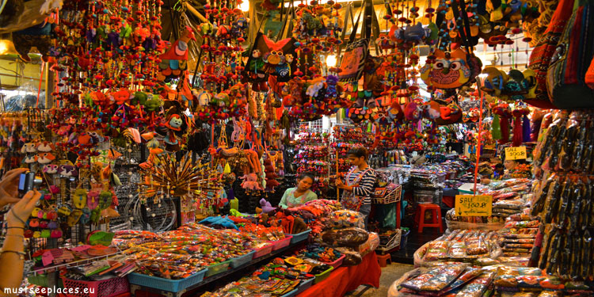

<!DOCTYPE html>
<html lang="es">
<html>
   
        <head>
    <TITLE>WEBSITE CECYMAGIC Alex_rz</TITLE>
    <link rel="icon" href="Logowebsite.jpeg" type="image/jpeg">
  </head>
</html>

<head>
    <meta charset="UTF-8">
    <meta name="viewport" content="width=device-width, initial-scale=1.0">
    <title>WEBSITE CECyMagic </title>
    <link href="https://cdn.jsdelivr.net/npm/bootstrap@5.3.3/dist/css/bootstrap.min.css" rel="stylesheet">

    <style>
    .card-img-top{
        height: 700px;
        object-fit: cover;
    }
     .card{
        height: 100%;
     }

   h1{
      color: rgb(99, 45, 25);
      font-family:cursive;
   }

    p{
      color: rgb(117, 9, 9);
      text-align:justify;
      font-family: Cambria, Cochin, Georgia, Times, 'Times New Roman', serif;
   }
   

    </style> 
</head>
 
<body>
        <div class="container text-center my-5">
        <h1>MERCADO DE ARTESANIAS </h1>
        <h4 style="color: rgba(21, 87, 18, 0.641);">¡
           Valle de Bravo !</h4>
        </div>

        <div class="container my-5">
        <div class="row g-4">

        <div class="col-md-6">
        <div class="card h-100 shadow">
          
           
        <div class="card-body text-center">
            <h5 class="card-title">
             VIDEO </h5>
            <a href="https://vt.tiktok.com/ZSpC4xj1h/">VER VIIDEO</a>


          <video controls>
            <source src="video5.mp4" type="video/mp4">
          </video>

        </div>
        </div>
        </div>
     
        

        <div class="col-md-6">
        <div class="card h-100 shadow">
          
           
        <div class="card-body text-center">

             <h5 class="card-title">
            MERCADO DE ARTESANIAS</h5>
            <p class="card-text">
             El Mercado de Artesanías de Valle de Bravo es uno de los lugares más visitados por los turistas que desean conocer y adquirir productos tradicionales de México. En sus pasillos se pueden encontrar artículos elaborados por artesanos de distintas regiones del país, como textiles, cerámica, joyería, artículos de madera y objetos decorativos que reflejan la diversidad cultural mexicana.
            </p>
            

            <p class="card-text">
             Además de ser un importante punto de compra, el mercado ofrece una experiencia cultural auténtica, ya que permite a los visitantes entrar en contacto con las tradiciones artesanales y conocer el trabajo manual que hay detrás de cada pieza. Su ubicación en el centro de Valle de Bravo lo convierte en una parada conveniente durante un recorrido por el Pueblo Mágico.
            </p>

            <p class="card-text">
             La visita al mercado es ideal para quienes buscan recuerdos, regalos o artesanías únicas. También es un excelente lugar para disfrutar del ambiente local, convivir con comerciantes y artesanos, y complementar la experiencia turística de Valle de Bravo con una muestra representativa de la cultura y el arte popular mexicano.
            </p>
           
           


        </div>
        </div>
        </div>

        </div>
        </div>
<a href="index.html"> REGRESAR </a>
      </body>
</html>
    
